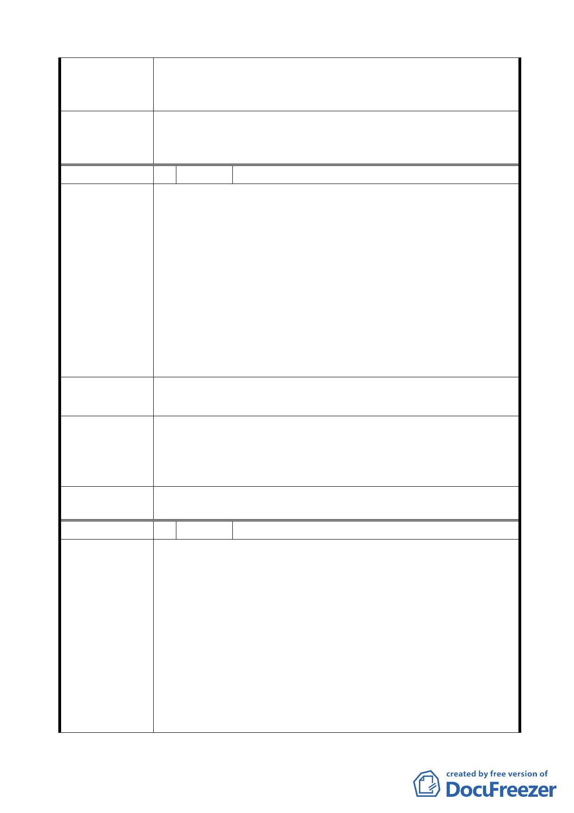

本案變更為交通廣場用地，其地上物安置及處理部分，市府
市 府 回 應 意 見 將成立專案工作小組，統整市府各局處可利用資源後，儘速
與居民協調相關安置措施。
請市府相關單位就計畫內容及後續拆遷安置、私有財產價值
委 員 會 決 議 之保障方式，加強與基地內土地、建物等相關權利人溝通說
明，並對區內社會弱勢居民之謀生提供必要協助。
編 號 5 陳情人 吳麗君
1. 周邊已有完善的捷運交通網，另承德路上與中山足球場上
的酒泉街及中山北路上也有充足的公車可搭乘，為了節能
減碳政府也大力提倡大家搭乘大眾運輸工具，現卻要拆屋
另闢停車空間，實在是多此一舉。
2. 交通部鐵路管理局發的文是：原住戶有優先承購權，當我
陳 情 理 由 一切依法辦理時(現也是合法的承租戶)，卻不能承購土
地，這很不合理。現在為了拆除房屋，而用這種交通廣場，
實在草率。
3. 此區規劃為快速都市計劃更新，但政府不釋放土地承購又
不進行都市計劃開發。
1.開放原住戶承購土地，進行土地開發整建。
建 議 辦 法 2.政府規劃成圓山有特色的商店、藝文空間。
捷運圓山站周邊雖有轉乘或接駁公車站之設置，但區位較為
市府回應意見
分散，未能提供舒適便捷的轉乘服務，爰以大眾運輸導向觀
點，提出本變更交通廣場用地案，規劃設置大眾運輸轉乘設
施，以達帶動觀光熱潮、促進地區整體發展之目標。
一、 同編號 1 決議。
委 員 會 決 議 二、 依市府回應意見辦理。
編 號 6 陳情人 陳瑞麟
提請保留臺北市酒泉街 11 號之合法地上物，無需拆屋，以保
障住戶繼續居住。
1. 本住戶自日治時代即向鐵路局合法租用土地使用，亦按時
繳納租金，迄今已有七、八十年之久。現卻接獲通知即將
拆屋並闢建交通停車場，本住戶歉難接受該決議。
陳 情 理 由 2. 捷運動工興建時，捷運站西側之酒泉街 9 巷原本應開闢為
道路但因鐵路局宿舍仍有居住人，故未闢建道路。現宿舍
已無人居住，應可闢建道路並與 10 巷道路相連通，即可改
善 9 巷與 10 巷道路不相通之交通瓶頸，無需再闢建「交通
廣場」。若「交通廣場」確實有迫切需要之闢建，亦應開闢
-6-